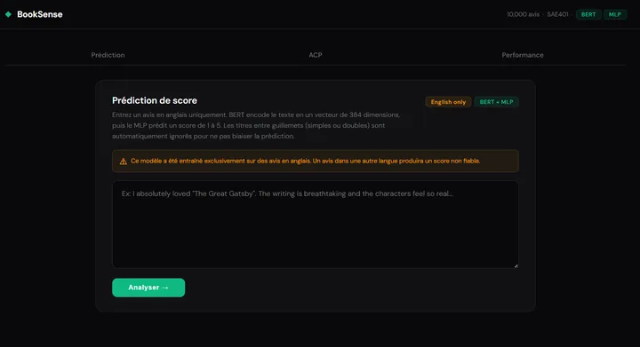

3e année de BUT Science des Données
Parcours Visualisation et Conception d’Outils Décisionnels (VCOD), IUT de Metz. Fin prévue en juin 2027.
En ce moment : Recherche un stage de 14 à 17 semaines à partir de mars 2027, notamment au Luxembourg : développement, automatisation, BI, ingénierie des données.
Je conçois des outils, j’explore les données et je transforme des idées en projets concrets.
Étudiant en 3e année de BUT Science des Données · IUT de Metz
En ce moment
Parcours Visualisation et Conception d’Outils Décisionnels (VCOD), IUT de Metz. Fin prévue en juin 2027.
Une application d’analyse de données footballistiques, construite au fil de l’année.
L’Estidiantine, bureau des étudiants du département Science des Données. Passation prévue prochainement.
Projets
Un stage, un outil utilisé au quotidien par une association, une interface d’IA. Le reste du catalogue est à un clic.
Un outil en VBScript qui vérifie automatiquement les modèles de données conçus dans SAP PowerDesigner et signale les anomalies, accompagné de nouveaux contrôles, de tableaux de bord et de guides d’utilisation.

Une application web (PHP, MySQL, JavaScript) qui remplace les cahiers et les fichiers Excel du local étudiant : encaissement, stocks par lots, ardoises et export comptable.

Une application Dash qui estime la note (de 1 à 5 étoiles) d’un avis de livre à partir de son texte, grâce à des embeddings BERT et un réseau de neurones, avec des onglets d’exploration et de suivi des performances.
Approche
Une caisse pour une association, un contrôle automatique pour une équipe, une application de planning : des choses que quelqu’un utilise ensuite.
Par exemple : Caisse de l’association, Stage Data Management, Planning immobilier VBA
Modéliser, intégrer, nettoyer et contrôler avant d’analyser. C’est souvent là que tout se joue.
Une interface, un tableau de bord ou une soutenance doivent dire clairement ce que les chiffres permettent de conclure, et ce qu’ils ne permettent pas.
Par exemple : SAÉ 4.VCOD.01, SAÉ 2.04, SAÉ 3.VCOD.04
Parcours
Spuerkeess, Luxembourg : contrôle qualité automatisé des modèles de données.
Équipe de six, intégration de plus de 100 étudiants, outil de caisse.
Parcours VCOD à l’IUT de Metz, actuellement en 3e année.
Encadrement d’enfants et projets pédagogiques à Méricourt.
Ailleurs
Le football et son analyse, la géopolitique, le journalisme et la vérification de l’information, la psychologie, les voyages. La data est mon chapitre principal aujourd’hui ; ce n’est pas le titre de tout le livre.